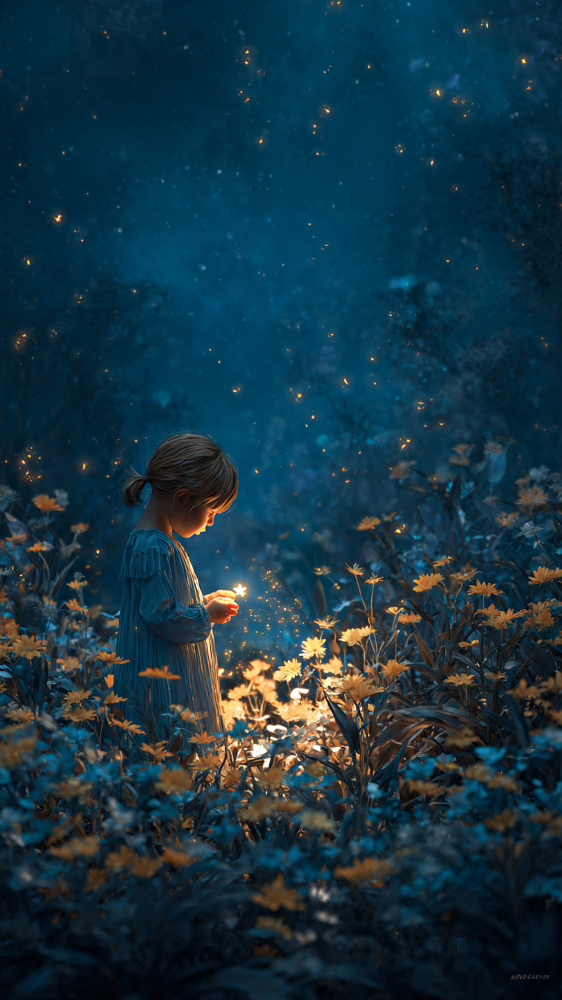
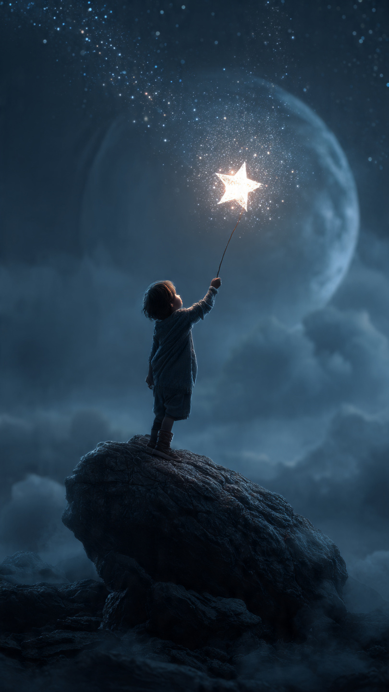

```html
⭐ النجمة التي سقطت في حديقة طفل صغير | قصص أطفال
```
في حديقة صغيرة خلف منزل قديم، كان يعيش طفل اسمه يوسف.
كان يوسف يحب مراقبة السماء في الليل، وكان أكثر شيء يحبه هو النظر إلى النجوم اللامعة.
كان دائمًا يسأل نفسه:
"هل للنجوم قصص؟"
"وهل يمكن لنجمة أن تزور الأرض يومًا؟"
في ليلة هادئة، خرج يوسف إلى الحديقة وجلس تحت شجرة كبيرة.
كانت السماء مليئة بالنجوم، وفجأة رأى ضوءًا صغيرًا يتحرك بسرعة نحو الأرض.
اقترب الضوء أكثر...
ثم سقط برفق بين الزهور.
اقترب يوسف بحذر.
فوجد نجمة صغيرة تلمع بين العشب.
كانت بحجم يده، ولها ضوء جميل.
قالت النجمة بصوت لطيف:
"أين أنا؟"
فتح يوسف عينيه بدهشة وقال:
"هل أنتِ... نجمة حقيقية؟"
ابتسمت النجمة وقالت:
"نعم، لقد سقطت من السماء ولم أجد طريق العودة."
شعر يوسف بالحزن من أجلها.
قال:
"لا تقلقي، سأساعدك في العودة."
حاول يوسف التفكير في طريقة لإعادتها، لكنه لم يعرف كيف يصل إلى السماء.
فقالت النجمة:
"ربما لا نحتاج إلى الوصول إلى السماء فقط..."
"ربما نحتاج إلى اكتشاف سبب سقوطِي أولًا."
بدأ يوسف والنجمة رحلة صغيرة داخل الحديقة.
كانا يبحثان عن أي علامة تساعدهما.
ولم يكونا يعرفان أن هذه المغامرة ستكشف سرًا قديمًا عن النجوم.
📷 الصورة رقم 1

بدأ يوسف والنجمة الصغيرة يبحثان في الحديقة عن سبب سقوطها.
كانا ينظران بين الزهور، وخلف الأشجار، وبالقرب من النافورة القديمة.
قال يوسف:
"لا تقلقي، سنجد طريقة لإعادتك إلى مكانك."
ابتسمت النجمة وقالت:
"شكرًا لك، لقد كنت خائفة عندما وجدت نفسي هنا وحدي."
بينما كانا يبحثان، لاحظ يوسف شيئًا غريبًا.
كانت هناك أزهار في الحديقة بدأت تلمع بنفس ضوء النجمة.
اقتربا منها، فوجدا حجرًا صغيرًا مدفونًا تحت التراب.
عندما لمس يوسف الحجر، ظهر ضوء قوي.
ثم ظهرت صورة قديمة لحديقة المنزل عندما كانت جديدة.
وكان في الصورة رجل عجوز يحمل نفس الحجر.
قالت النجمة بدهشة:
"هذا الحجر له علاقة بالسماء!"
قرأ يوسف الكلمات المنقوشة عليه:
"من يحافظ على نور الخير، سيحافظ على نور النجوم."
فهم يوسف أن الحجر كان يحفظ جزءًا من طاقة النجوم منذ زمن بعيد.
لكن كيف يمكن استخدامه لإعادة النجمة إلى السماء؟
في تلك اللحظة، ظهر ضوء في السماء.
كانت هناك نجوم أخرى تبحث عن النجمة الصغيرة.
قالت النجمة:
"إنهم أصدقائي..."
"لكنني لا أستطيع الوصول إليهم."
نظر يوسف إلى الحجر، ثم إلى السماء.
لقد اقترب وقت العودة...
لكن كان هناك اختبار أخير ينتظره.
📷 الصورة رقم 2

أمسك يوسف الحجر المضيء، وفكر في طريقة لمساعدة النجمة الصغيرة.
لم يكن يريد أن يفقد صديقته الجديدة، لكنه كان يعرف أن مكانها الحقيقي هو السماء.
قال يوسف:
"يجب أن تعودي إلى عائلتك في الأعلى."
ابتسمت النجمة وقالت:
"لن أنسى أبدًا أنك ساعدتني."
رفع يوسف الحجر نحو السماء.
وفجأة بدأ الضوء يزداد قوة، وظهرت دائرة من النجوم فوق الحديقة.
بدأت النجمة الصغيرة ترتفع ببطء نحو السماء.
قبل أن ترحل، قالت:
"عندما تنظر إلى السماء، ستجدني دائمًا هناك."
اختفت النجمة بين النجوم الأخرى، وعادت السماء أكثر جمالًا من قبل.
لكن المفاجأة أن الحديقة لم تعد كما كانت.
فقد أصبحت الزهور تلمع ليلًا بضوء خفيف، وكأنها تحتفظ بذكرى تلك الليلة.
في الصباح، ذهب يوسف إلى الحديقة.
وجد الحجر الصغير قد تحول إلى زهرة مضيئة جميلة.
ابتسم وقال:
"حتى الأشياء الصغيرة يمكن أن تحمل أسرارًا عظيمة."
ومنذ ذلك اليوم، أصبح يوسف يحب النظر إلى النجوم أكثر من أي وقت مضى.
كان يعرف أن في السماء صديقة صغيرة تضيء كل ليلة.
وكان يحكي للجميع:
"قد تأتي إلينا أشياء جميلة من أماكن بعيدة..."
"لكن أجمل ما يمكن أن نمنحه هو المساعدة واللطف."
⭐🌙 انتهت القصة 🌙⭐
العبرة:
عمل صغير مليء باللطف قد يصنع أثرًا كبيرًا لا يُنسى.